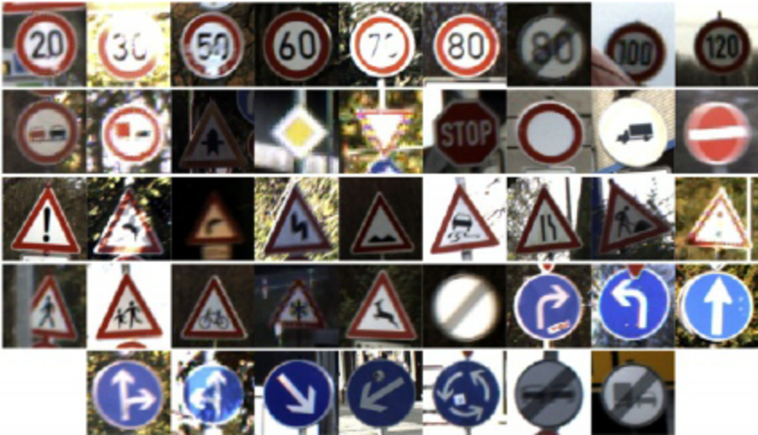
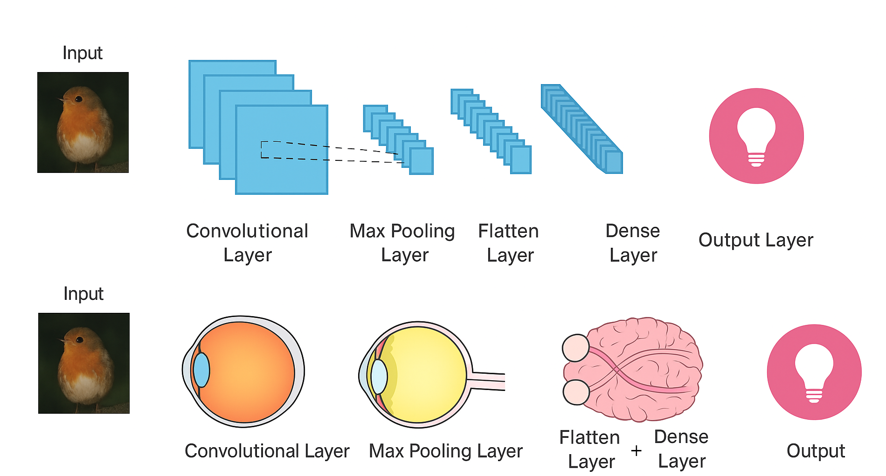

Wherein I hand a neural net a stack of German road signs and say, “Figure it out”
How well can a compact neural network ‘read’ the road?
Traffic signs are small, standardized, and mission-critical — yet teaching machines to read them under glare, blur, or rain is surprisingly hard.
I set out to test the limits of machine vision on the German Traffic Sign Recognition Benchmark (GTSRB). With a handful of compact CNNs, I pushed a simple model past 99% accuracy on held-out data.
Why It Matters
Computer vision is the art of teaching machines to see. It’s already everywhere: unlocking your phone with face ID, spotting tumors in scans, scanning QR codes at restaurants, monitoring crops with drones, digitizing paperwork, even — perhaps most importantly — counting how many times your dog photobombs your Zoom calls.
This project zoomed in on traffic signs — a classic benchmark in image recognition with real-world consequences. Modern cars bristle with sensors, but even the best driver can miss a sign in heavy rain or at night. What if your car never did?
The use cases are multiplying fast:
- Drivers: AR windshields that highlight speed limits and warnings, or audio cues for visually impaired drivers.
- Cities & maps: Dashcams or street-view cars automatically updating digital maps and flagging damaged or missing signs to speed up road maintenance and repairs.
- Industries: Delivery fleets checking driver compliance, insurers reconstructing accidents, rental cars translating foreign signs for tourists.
- Policy: Since July 2022, all new cars in the EU must include Intelligent Speed Assistance (ISA), which uses camera-based sign recognition.
And all this is just the prelude to self-driving cars—if they ever truly arrive.
The Challenge

Some classes are 10× more common than others—just like real life.
Traffic signs appear in dozens of varieties. Some are everywhere, like “speed limit 50 km/h.” Others are vanishingly rare. Many look nearly identical (especially speed limits), and all must be recognized under wildly different conditions: glare, snow, odd camera angles, partial blockage, or even graffiti. It’s like asking a human to tell identical twins apart in a rainstorm.
A model that succeeds here must be as resilient as the human eye — or better.
Every image is an actual example from the GTSRB, representing each class in order and photographed under diverse conditions. See the Visual Key for a full reference to all sign classes.
CNNs in Plain English
Convolutional Neural Networks (CNNs) were designed for images. Early versions in the 1980s struggled to read handwriting on mail, but by 2012, CNNs crushed the ImageNet competition and kicked off the deep learning boom.
Think of a CNN as an artificial eye. Small “filters” slide over the image looking for edges, curves, and textures. These low-level details stack into higher-level features until the network can recognize whole objects — much like how neurons in the visual cortex combine signals from the retina to form sight.
A CNN mimics the human visual system, building from simple details to complex objects.
Experiments
I split the dataset into training, validation, and test sets. Models trained on the first two; the best one was judged on the unseen test set.
Baseline Model
The baseline model, borrowed from the MNIST handwritten digit dataset, used:
- One convolutional layer (32 filters): Like a team of 32 tiny spotlights, each searching for different patterns (edges, colors) in the image.
- Max pooling: Shrinks the image, keeping only the most important details—like summarizing a photo by its boldest features.
- Flatten + dense layer: Unrolls all the findings into a list, then connects the dots to recognize bigger shapes or objects.
- Softmax output: Makes a final guess, giving a score for each possible sign, and picks the most likely one.
This simple network hit 96.6% accuracy. Respectable — but it faltered on visually similar signs, especially among speed limits.
Most mistakes were between signs that would likely trip up a human too—like mixing up one speed limit for another.
Model Experimentation
After the baseline, I refined and improved the models through these experiments:
- Class Weights: Weighted rarer signs like “rare birds” in a birdwatching contest, so the model didn’t just count pigeons. It helped the uncommon signs but slightly hurt the common ones — accuracy dipped overall. A trade-off.
- Two Convolutional Layers: Adding a second 64-filter convolutional layer was like bringing in a second team of 64 even sharper spotlights—and handing out reading glasses to everyone—so the model could pick up finer details and patterns, boosting accuracy to 98.3% and halving the errors.
- Batch Normalization: BatchNorm re-scales inputs so the network doesn’t over-rely on bright, common images and forget about blurry or rare ones. Think of it as a photographer auto-adjusting exposure after every shot. This stabilized training and output results that were similar to the two-layer model.
- Winning Combo: Two Conv Layers + BatchNorm: Combining the two approaches delivered the best of both worlds and a winning model: 99.4% accuracy, cutting errors from 183 (baseline) to just 31.
Notice how the winning model’s curves nearly overlap, while the baseline’s remain separated. This means the baseline doesn’t match the winning model’s consistency on new examples
Confusion matrix: A bold diagonal signals high accuracy; off-diagonal values mark mistakes. The winning model’s matrix is nearly all zeros—errors are rare. Most confusion clusters in the upper left, where speed limits trip up the model.
- Overkill: Extra Dense Layer: Adding more dense layers made the model less confident and less accurate — overthinking instead of focusing. Like me much of the time.
The winning model’s histogram shows few, confident errors; the overkill model, by contrast, makes many errors and is often unsure in its predictions.
Model Comparison Table
| Model | Accuracy | Errors | Notes |
|---|---|---|---|
| Baseline Model | 96.6% | 183 | Simple starter model; struggles with rare or look-alike signs. |
| + Class Weights | 95.8% | 222 | Helps rare signs, but hurts common ones—a tradeoff. |
| + Conv Layer | 98.3% | 92 | Second layer spots more details; fewer mix-ups. |
| + Batch Norm | 98.3% | 93 | Training is steadier and results are more reliable. |
| + Conv + BN | 99.4% | 31 | Best overall: very accurate, few mistakes. |
| + Conv + Dense | 93.8% | 329 | Too complex—model gets confused and makes more errors. |
| + Conv + Dense + BN | 98.3% | 90 | No real gain over simpler models; simple wins. |
Accuracy: Percent of correct predictions.
Errors: Wrong guesses out of 5,328 validation
samples.
Test Results
On the untouched test set, the best model hit ~99% accuracy, with only 43 mistakes. Almost all were misread speed limits, signs that trip up humans too.
Final test set confusion matrix: nearly perfect accuracy.
Final test set confidence histogram: confident, accurate predictions—errors are rare.
Takeaways
- Simplicity wins. Compact, well-tuned CNNs can beat bigger, fancier models.
- Human-like errors. Misclassifications weren’t random — they came from genuine ambiguity.
- General principle. CNNs shine on small, standardized objects — from traffic signs to barcodes to cells under a microscope.
While this wasn’t about building a self-driving car, it shows how far compact neural networks can go in learning to read the road.
CNNs are like expert stamp collectors—great at spotting subtle differences among many similar, well-defined items. That skill goes far beyond traffic safety, shaping the future of retail, healthcare, and more. Compact neural nets may never drive cars on their own, but they’re already making streets safer, cities smarter, and technology better for everyone.